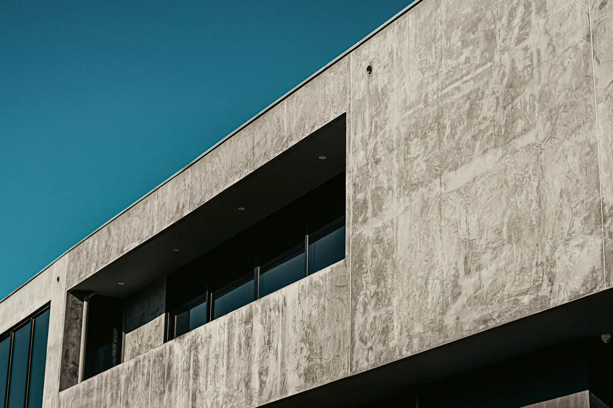

Casas e espaços pensados para o terreno
Implantação, luz natural, ventilação e aprovação na prefeitura e no condomínio. Coordenamos os projetos de estrutura, elétrica e hidráulica para nada ser resolvido no improviso.
- 01Residências unifamiliares e casas de campo
- 02Espaços comerciais: cafés, lojas e escritórios
- 03Reformas e retrofit